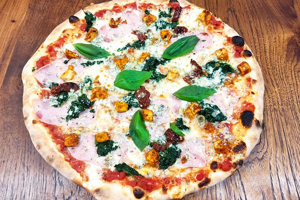

Pizza

Ingredients
- Pizza dough
- Pizza sauce (tomato-based)
- Shredded mozzarella cheese
- Pepperoni slices (or your choice of toppings)
- Italian seasoning or basil
- Olive oil (for crust)
- Cornmeal or flour (for dusting)
Steps
- Preheat your oven to its highest temperature.
- Roll out the pizza dough on a floured surface.
- Transfer the dough to a pizza stone or baking sheet dusted with cornmeal.
- Spread pizza sauce over the dough, leaving the edges for the crust.
- Sprinkle mozzarella cheese evenly over the sauce.
- Add pepperoni slices or other toppings of your choice.
- Drizzle the crust edge with olive oil.
- Bake in the oven until the crust is golden and cheese is bubbly.
- Let cool for a few minutes before slicing and serving.